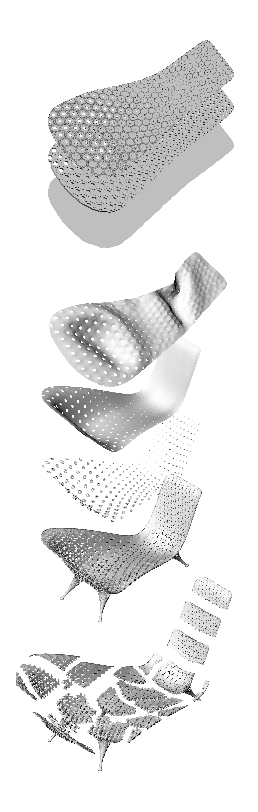
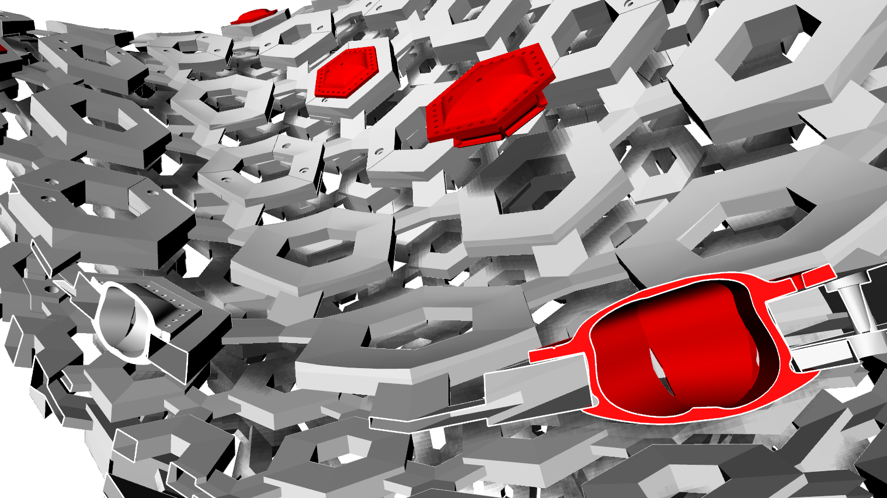

Employment at
Joris Laarman Studio
2015-2023, Amsterdam

My primary focus as a computational design specialist at Joris Laarman Studio was working on the parametric designs for digitally fabricated, limited-edition furniture pieces. This included several iterations of the Maker Tables, Maker Chairs and benches of the same structural principle. I furthermore reworked some later editions of the Leaf Table and the Strange Attractor Lamp and was involved in many other design research projects and unique furniture pieces for private clients.

Notably, my first project at the studio was the Gradient Lounge, where I participated as early as the detail design phase, developing the geometry for client presentation and fabrication, elaborating the fine details of the cellular gradient, the assembly system, the textile cover knitting pattern and its attachment to the chair.

The Gradient Lounge explores the morphological differentiation of a 3D-printed, metal-coated “tissue” of hierachically connected polygon cells. The intricate structure exhibits a gradient between densification and opening and changes in scale from the interior to the exterior of the seat, its hexagonal tiling mirrored in the pattern of the CNC-knitted soft cover.
The original projects and their intellectual property are copyrighted by Joris Laarman Studio.